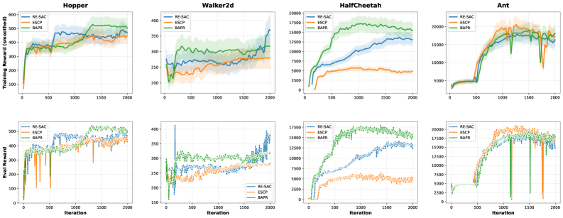
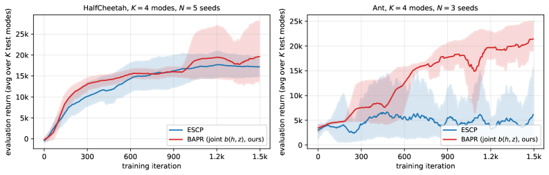
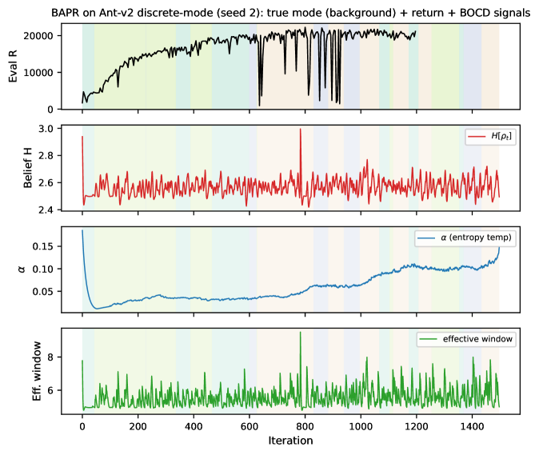

Machine-verifies a contraction counterexample and error budget in Lean 4 across three files with 22 theorems.
Abstract
Real-world control systems frequently operate under piecewise stationary conditions, where dynamics remain stable for extended periods before undergoing abrupt regime changes. Standard robust RL methods face a fundamental dilemma: a globally conservative policy wastes performance during stable periods, while a locally adaptive policy risks catastrophic failure when the regime changes undetected. We propose BAPR (Bayesian Amnesic Piecewise-Robust SAC), which unifies Bayesian Online Change Detection (BOCD) with robust ensemble RL. The BAPR operator – a convex combination of mode-conditional Bellman operators weighted by a frozen belief distribution – is a $γ$-contraction. A complementary counterexample, machine-verified in Lean 4, establishes a sharp boundary: when beliefs depend on the Q-function, the contraction factor becomes $γ+ λΔ$ (where $Δ$ is the mode reward gap), and contraction fails exactly when $γ+ λΔ\geq 1$. We derive a component-wise formal error budget for the abstract operator – every component machine-verified – bounding post-switch recovery; the budget applies to the abstract mode-mixture operator and inherits to the implemented shared-critic algorithm only through the frozen-parameter design intuition. All results are formally verified with no sorry (1,145 lines across 3 Lean 4 files, 22 machine-verified theorems). BOCD drives an adaptive conservatism mechanism: the policy becomes maximally conservative after detected change-points and smoothly relaxes as confidence grows, with detection delay $O(\log(1/δ))$. A context-conditioning module trained via RMDM loss provides mode-aware representations from simulator-provided mode IDs at training time and requires no mode labels at deployment.
Problem
Real-world control systems operate under piecewise-stationary conditions with abrupt regime changes. Globally conservative robust RL wastes performance during stable periods, while locally adaptive policies risk catastrophic failure when regime changes go undetected.
Approach
BAPR unifies Bayesian Online Change Detection (BOCD) with robust ensemble RL (RE-SAC). The BAPR operator is a convex combination of mode-conditional Bellman operators weighted by a frozen belief distribution. The policy becomes maximally conservative after detected change-points and relaxes as confidence grows. Core theoretical results (gamma-contraction of the operator, a counterexample showing contraction fails when beliefs depend on the Q-function) are formally verified in Lean 4 with no sorry across 1,145 lines and 22 theorems.

Figure 1: Training curves (smoothed) and evaluation rewards over 2000 iterations in non-stationary MuJoCo environments. Shaded regions denote 95% bootstrap confidence intervals across available seeds. BAPR (ours) achieves higher final performance in HalfCheetah and Ant in this benchmark, while Walker2d remains challenging for the tested methods.
Results
On non-stationary MuJoCo environments, BAPR achieves +349% mean return over ESCP on Ant in a discrete-regime benchmark (20,679 vs 4,600, N=3 seeds, with min(BAPR) > max(ESCP)). BOCD detection delay is O(log(1/delta)) and the adaptive conservatism mechanism behaves as theoretically predicted.

Figure 2: Training curves on the discrete-regime benchmark ( K{=}4 modes, exponential dwell). Solid lines are mean evaluation returns (averaged across K{=}4 test modes per evaluation); shaded bands denote 95\% bootstrap confidence intervals across seeds. Left : HalfCheetah ( N{=}5 seeds). Right : Ant ( N{=}3 seeds) — BAPR’s lower confidence bound exceeds ESCP’s upper confidence bound after iter \a

Figure 3: BOCD detection + adaptive-conservatism dynamics on Ant-v2 discrete-mode (seed 2 , BAPR “no per-trans” configuration). Top : true mode (background) and per-iter eval return. Second : BOCD belief entropy H[\rho_{t}] , which spikes after each true-mode switch and decays as evidence accumulates. Third : entropy temperature \alpha . Bottom : effective belief window. Across the 22 switches in